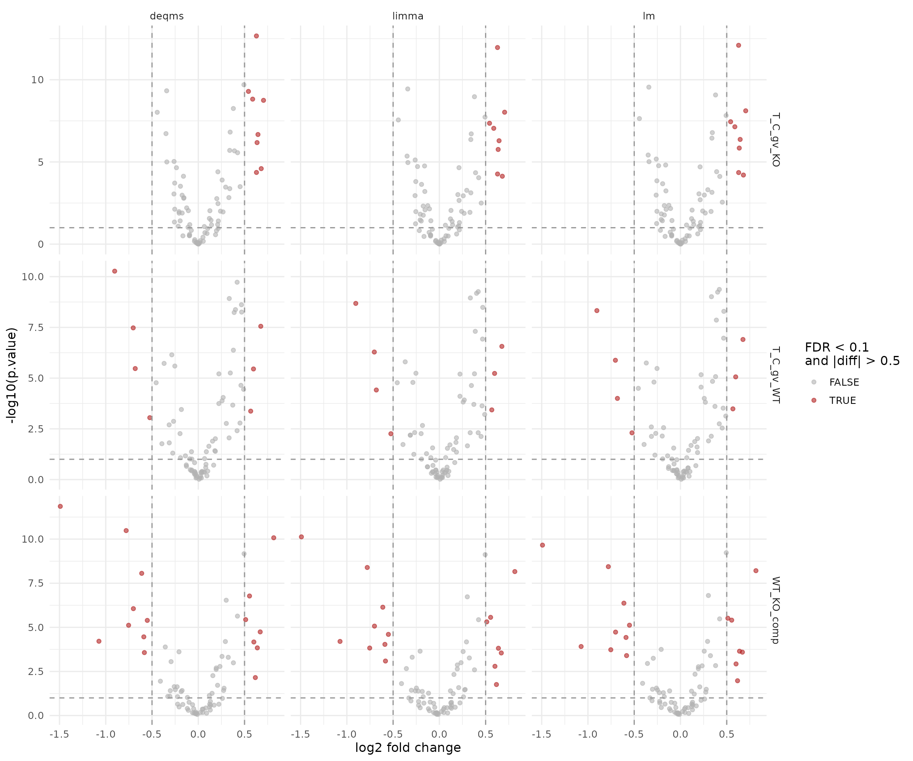
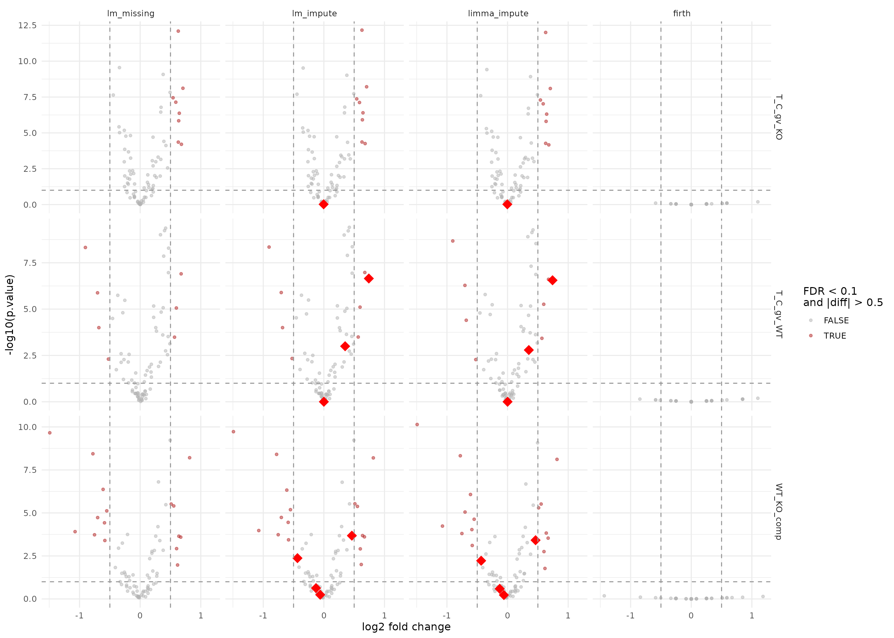

Contrast Facades with Two-Factor Subgroup Design
Witold E. Wolski
2026-06-18
Source:vignettes/ContrastFacade2Factor.Rmd
ContrastFacade2Factor.RmdPurpose
This vignette demonstrates the same
build_contrast_analysis() facade workflow on a dataset with
two factors (e.g. treatment and genotype), yielding four subgroups:
C_WT, T_WT, C_KO,
T_KO. We define contrasts:
T_C_gv_WT = T_WT - C_WTT_C_gv_KO = T_KO - C_KOWT_KO_comp = T_C_gv_WT - T_C_gv_KO
We start from simulated two-factor peptide data, derive a single
subgroup factor, and run both protein-input and peptide-input facades
with the same contrast specification. See
ContrastFacades.Rmd for the one-factor introduction.
Simulate two-factor data and encode subgroups
options(prolfqua.vectorize = TRUE)
dd <- sim_lfq_data_2factor_config(
Nprot = 80,
with_missing = TRUE,
weight_missing = 1,
PEPTIDE = TRUE,
seed = 7
)
cfg_subgroup <- dd$config$clone(deep = TRUE)
data_subgroup <- dd$data |>
dplyr::mutate(
Condition = dplyr::recode(Treatment, A = "C", B = "T"),
Genotype = dplyr::recode(Background, Z = "WT", X = "KO"),
Subgroup = paste(Condition, Genotype, sep = "_")
)
cfg_subgroup$factors <- c(Subgroup = "Subgroup")
cfg_subgroup$factor_depth <- 1
lfq_peptide_2f <- LFQData$new(data_subgroup, cfg_subgroup)
lfq_peptide_2f <- lfq_peptide_2f$get_Transformer()$log2()$lfq
lfq_protein_2f <- lfq_peptide_2f$get_Aggregator()$aggregate()
lfq_peptide_2f$hierarchy_keys()## [1] "protein_Id" "peptide_Id"
lfq_protein_2f$hierarchy_keys()## [1] "protein_Id"
lfq_protein_2f$nr_children_col()## [1] "nr_children_protein_Id"Define contrasts
contrasts_2f <- c(
T_C_gv_WT = "SubgroupT_WT - SubgroupC_WT",
T_C_gv_KO = "SubgroupT_KO - SubgroupC_KO",
WT_KO_comp = "T_C_gv_WT - T_C_gv_KO"
)Three contrasts: two within-genotype treatment effects and their difference (interaction-like comparison).
Protein-input facades
The following facades require aggregated input. firth is
included here because it can be fitted directly on aggregated protein
input.
fa_lm_2f <- build_contrast_analysis(
lfq_protein_2f,
"~ Subgroup",
contrasts_2f,
method = "lm"
)
fa_limma_2f <- build_contrast_analysis(
lfq_protein_2f,
"~ Subgroup",
contrasts_2f,
method = "limma"
)
fa_limma_impute_2f <- build_contrast_analysis(
lfq_protein_2f,
"~ Subgroup",
contrasts_2f,
method = "limma_impute"
)
fa_lm_missing_2f <- build_contrast_analysis(
lfq_protein_2f,
"~ Subgroup",
contrasts_2f,
method = "lm_missing"
)
fa_deqms_2f <- build_contrast_analysis(
lfq_protein_2f,
"~ Subgroup",
contrasts_2f,
method = "deqms"
)
fa_lm_impute_2f <- build_contrast_analysis(
lfq_protein_2f,
"~ Subgroup",
contrasts_2f,
method = "lm_impute"
)
fa_firth_protein_2f <- build_contrast_analysis(
lfq_protein_2f,
"~ Subgroup",
contrasts_2f,
method = "firth"
)Because all protein-input facades share the same interface and report protein-level contrasts, their outputs can be combined directly.
# Proteins missing in the baseline lm facade (used to flag rescued proteins)
lm_missing_ids_2f <- fa_lm_2f$get_missing() |>
dplyr::select(protein_Id, contrast) |>
dplyr::mutate(rescued = TRUE)
results_protein_2f <- bind_rows(
fa_lm_2f$get_contrasts(),
fa_limma_2f$get_contrasts(),
fa_limma_impute_2f$get_contrasts(),
fa_lm_missing_2f$get_contrasts(),
fa_lm_impute_2f$get_contrasts(),
fa_deqms_2f$get_contrasts(),
fa_firth_protein_2f$get_contrasts()
) |>
dplyr::select(dplyr::any_of(c(
"facade", "modelName", "protein_Id", "contrast", "avgAbd", "diff", "FDR",
"statistic", "std.error", "df", "p.value", "conf.low", "conf.high",
"sigma"
))) |>
dplyr::left_join(lm_missing_ids_2f, by = c("protein_Id", "contrast")) |>
dplyr::mutate(
rescued = dplyr::coalesce(rescued, FALSE),
significant = FDR < 0.1 & abs(diff) > 0.5
)
results_protein_2f |>
dplyr::count(facade, name = "n_results")## # A tibble: 7 × 2
## facade n_results
## <chr> <int>
## 1 deqms 232
## 2 firth 240
## 3 limma 232
## 4 limma_impute 240
## 5 lm 232
## 6 lm_impute 240
## 7 lm_missing 240For facades that combine several underlying result types, such as
lm_missing, the modelName column still tells
you where individual rows came from.
results_protein_2f |>
dplyr::count(facade, contrast, modelName, name = "n_results")## # A tibble: 30 × 4
## facade contrast modelName n_results
## <chr> <chr> <chr> <int>
## 1 deqms T_C_gv_KO WaldTest_DEqMS 79
## 2 deqms T_C_gv_WT WaldTest_DEqMS 77
## 3 deqms WT_KO_comp WaldTest_DEqMS 76
## 4 firth T_C_gv_KO WaldTestFirth 80
## 5 firth T_C_gv_WT WaldTestFirth 80
## 6 firth WT_KO_comp WaldTestFirth 80
## 7 limma T_C_gv_KO limma 79
## 8 limma T_C_gv_WT limma 77
## 9 limma WT_KO_comp limma 76
## 10 limma_impute T_C_gv_KO limma 76
## # ℹ 20 more rowsProtein-level volcano comparison
Standard facades
standard_facades_2f <- c("lm", "limma", "deqms")
results_standard_2f <- results_protein_2f |>
dplyr::filter(facade %in% standard_facades_2f)
ggplot(results_standard_2f, aes(x = diff, y = -log10(p.value), color = significant)) +
geom_point(alpha = 0.6, size = 1.5) +
facet_grid(contrast ~ facade, scales = "free_y") +
geom_vline(xintercept = c(-0.5, 0.5), linetype = "dashed", color = "grey60") +
geom_hline(yintercept = -log10(0.1), linetype = "dashed", color = "grey60") +
scale_color_manual(values = c(`TRUE` = "firebrick", `FALSE` = "grey70")) +
labs(x = "log2 fold change", y = "-log10(p.value)", color = "FDR < 0.1\nand |diff| > 0.5") +
theme_minimal(base_size = 12)
Volcano plots for the standard protein-level facades (lm, limma, deqms).
Imputation and missingness facades
Rescued proteins (missing in plain lm) are shown as
large red diamonds so they stand out clearly. This group includes the
LOD imputation facades (lm_missing, lm_impute,
limma_impute) and the firth logistic regression facade
which models missingness directly.
impute_facades_2f <- c("lm_missing", "lm_impute", "limma_impute", "firth")
results_impute_2f <- results_protein_2f |>
dplyr::filter(facade %in% impute_facades_2f) |>
dplyr::mutate(facade = factor(facade, levels = impute_facades_2f))
ggplot(results_impute_2f, aes(x = diff, y = -log10(p.value))) +
geom_point(data = dplyr::filter(results_impute_2f, !rescued),
aes(color = significant), alpha = 0.5, size = 1.2) +
geom_point(data = dplyr::filter(results_impute_2f, rescued),
color = "red", shape = 18, size = 5, alpha = 1) +
facet_grid(contrast ~ facade, scales = "free_y") +
geom_vline(xintercept = c(-0.5, 0.5), linetype = "dashed", color = "grey60") +
geom_hline(yintercept = -log10(0.1), linetype = "dashed", color = "grey60") +
scale_color_manual(values = c(`TRUE` = "firebrick", `FALSE` = "grey70")) +
labs(x = "log2 fold change", y = "-log10(p.value)", color = "FDR < 0.1\nand |diff| > 0.5") +
theme_minimal(base_size = 12)
Volcano plots for the imputation and missingness facades. Large red diamonds mark proteins rescued (missing in plain lm).
Looking at the strongest protein-level hits
results_protein_2f |>
dplyr::group_by(facade, contrast) |>
dplyr::slice_min(order_by = p.value, n = 5, with_ties = FALSE) |>
dplyr::ungroup() |>
dplyr::select(facade, contrast, modelName, protein_Id, diff, p.value, FDR)## # A tibble: 105 × 7
## facade contrast modelName protein_Id diff p.value FDR
## <chr> <chr> <chr> <chr> <dbl> <dbl> <dbl>
## 1 deqms T_C_gv_KO WaldTest_DEqMS qc8ZRR~4628 0.628 2.16e-13 1.71e-11
## 2 deqms T_C_gv_KO WaldTest_DEqMS H7jUye~2322 0.493 2.01e-10 7.94e- 9
## 3 deqms T_C_gv_KO WaldTest_DEqMS zO74Fn~0389 -0.342 4.69e-10 1.01e- 8
## 4 deqms T_C_gv_KO WaldTest_DEqMS lRuJ5o~6058 0.542 5.11e-10 1.01e- 8
## 5 deqms T_C_gv_KO WaldTest_DEqMS uLYRH7~7195 0.588 1.51e- 9 2.35e- 8
## 6 deqms T_C_gv_WT WaldTest_DEqMS uLYRH7~7195 -0.904 5.36e-11 4.12e- 9
## 7 deqms T_C_gv_WT WaldTest_DEqMS qc8ZRR~4628 0.420 1.88e-10 7.24e- 9
## 8 deqms T_C_gv_WT WaldTest_DEqMS HnBvvB~5903 0.335 1.20e- 9 3.07e- 8
## 9 deqms T_C_gv_WT WaldTest_DEqMS IPV3OT~3010 0.467 2.42e- 9 4.66e- 8
## 10 deqms T_C_gv_WT WaldTest_DEqMS lCgO3j~8152 0.402 4.22e- 9 6.41e- 8
## # ℹ 95 more rowsProteins that could not be estimated
Every facade has a get_missing() method that returns the
protein x contrast pairs present in the input data but absent from
get_contrasts(). This makes it easy to see which proteins
each method fails on and to compare coverage.
missing_all_2f <- dplyr::bind_rows(
fa_lm_2f$get_missing() |> dplyr::mutate(facade = "lm"),
fa_limma_2f$get_missing() |> dplyr::mutate(facade = "limma"),
fa_limma_impute_2f$get_missing() |> dplyr::mutate(facade = "limma_impute"),
fa_lm_missing_2f$get_missing() |> dplyr::mutate(facade = "lm_missing"),
fa_lm_impute_2f$get_missing() |> dplyr::mutate(facade = "lm_impute"),
fa_deqms_2f$get_missing() |> dplyr::mutate(facade = "deqms"),
fa_firth_protein_2f$get_missing() |> dplyr::mutate(facade = "firth")
)
missing_all_2f |>
dplyr::count(facade, contrast, name = "n_missing") |>
knitr::kable(caption = "Number of missing protein x contrast pairs per facade")| facade | contrast | n_missing |
|---|---|---|
| deqms | T_C_gv_KO | 1 |
| deqms | T_C_gv_WT | 3 |
| deqms | WT_KO_comp | 4 |
| limma | T_C_gv_KO | 1 |
| limma | T_C_gv_WT | 3 |
| limma | WT_KO_comp | 4 |
| lm | T_C_gv_KO | 1 |
| lm | T_C_gv_WT | 3 |
| lm | WT_KO_comp | 4 |
Per-sample intensities of the missing proteins
missing_proteins_2f <- unique(missing_all_2f$protein_Id)
if (length(missing_proteins_2f) > 0) {
lfq_protein_2f$data_long() |>
dplyr::filter(protein_Id %in% missing_proteins_2f) |>
dplyr::select(protein_Id, sampleName,
!!rlang::sym(lfq_protein_2f$response())) |>
tidyr::pivot_wider(names_from = sampleName,
values_from = !!rlang::sym(lfq_protein_2f$response())) |>
knitr::kable(digits = 2, caption = "Per-sample intensities of proteins that could not be estimated")
}| protein_Id | A_V1 | A_V2 | A_V3 | A_V4 | B_V1 | B_V2 | B_V3 | B_V4 | C_V1 | C_V2 | C_V3 | C_V4 | Ctrl_V1 | Ctrl_V2 | Ctrl_V3 | Ctrl_V4 |
|---|---|---|---|---|---|---|---|---|---|---|---|---|---|---|---|---|
| hjVK4f~9433 | NA | NA | 3.88 | NA | 4.42 | 4.35 | 4.28 | 4.29 | NA | NA | NA | NA | NA | 3.68 | NA | 3.86 |
| mVseto~9392 | 4.40 | 4.50 | 4.47 | NA | 4.67 | 4.63 | 4.66 | 4.69 | 4.62 | 4.72 | 4.54 | 4.64 | NA | NA | NA | NA |
| QQg7IC~3558 | 3.98 | NA | NA | 3.83 | 4.34 | 4.31 | 4.36 | 4.31 | 4.38 | 4.31 | NA | 4.41 | NA | NA | NA | NA |
| zvzYsk~2881 | NA | 3.79 | 3.92 | NA | NA | NA | NA | NA | NA | 3.83 | NA | 3.92 | 4.18 | 4.17 | NA | NA |
The missing cells (NA) explain why these proteins cannot be estimated
— they lack observations in one or more groups. The
lm_missing facade fills in these gaps via group-mean
imputation, while lm_impute and limma_impute
re-fit after imputing individual values with the LOD and borrowing
covariance from successful fits. These should have fewer missing
proteins than plain lm or limma.
Estimates for the missing proteins from lm_missing and
lm_impute
For proteins that plain lm could not estimate, the
imputation-based facades can still produce contrast results. The table
below shows these rescued estimates side by side.
lm_missing_proteins_2f <- fa_lm_2f$get_missing()$protein_Id |> unique()
if (length(lm_missing_proteins_2f) > 0) {
rescued_2f <- results_protein_2f |>
dplyr::filter(
protein_Id %in% lm_missing_proteins_2f,
facade %in% c("lm_missing", "lm_impute", "limma_impute")
) |>
dplyr::arrange(protein_Id, contrast, facade)
rescued_2f |>
knitr::kable(
digits = 3,
caption = "Contrast estimates from lm_missing, lm_impute, and limma_impute for proteins that plain lm could not estimate"
)
} else {
cat("All proteins were estimable by plain lm — no rescued estimates to show.")
}| facade | modelName | protein_Id | contrast | avgAbd | diff | FDR | statistic | std.error | df | p.value | conf.low | conf.high | sigma | rescued | significant |
|---|---|---|---|---|---|---|---|---|---|---|---|---|---|---|---|
| limma_impute | limma_imputed | QQg7IC~3558 | T_C_gv_KO | 4.125 | 0.411 | 0.002 | 5.353 | 0.077 | 8.398 | 0.001 | 0.235 | 0.587 | 0.109 | FALSE | FALSE |
| lm_impute | WaldTest_moderated_imputed | QQg7IC~3558 | T_C_gv_KO | 4.125 | 0.411 | 0.001 | 5.691 | 0.072 | 8.653 | 0.000 | 0.179 | 0.644 | 0.102 | FALSE | FALSE |
| lm_missing | WaldTest_moderated | QQg7IC~3558 | T_C_gv_KO | 4.118 | 0.425 | 0.000 | 6.660 | 0.046 | 9.389 | 0.000 | 0.259 | 0.591 | 0.074 | FALSE | FALSE |
| limma_impute | limma_imputed | QQg7IC~3558 | T_C_gv_WT | 4.075 | 0.351 | 0.005 | 4.568 | 0.077 | 8.398 | 0.002 | 0.175 | 0.526 | 0.109 | TRUE | FALSE |
| lm_impute | WaldTest_moderated_imputed | QQg7IC~3558 | T_C_gv_WT | 4.075 | 0.351 | 0.003 | 4.856 | 0.072 | 8.653 | 0.001 | 0.118 | 0.583 | 0.102 | TRUE | FALSE |
| lm_missing | groupAverage | QQg7IC~3558 | T_C_gv_WT | 4.075 | 0.351 | 0.001 | 8.081 | 0.043 | 6.000 | 0.000 | 0.245 | 0.457 | 0.053 | TRUE | FALSE |
| limma_impute | limma_imputed | QQg7IC~3558 | WT_KO_comp | 0.381 | -0.060 | 0.688 | -0.556 | 0.109 | 8.398 | 0.593 | -0.309 | 0.188 | 0.109 | TRUE | FALSE |
| lm_impute | WaldTest_moderated_imputed | QQg7IC~3558 | WT_KO_comp | 0.381 | -0.060 | 0.661 | -0.591 | 0.101 | 8.653 | 0.570 | -0.293 | 0.172 | 0.102 | TRUE | FALSE |
| lm_missing | groupAverage | QQg7IC~3558 | WT_KO_comp | 0.389 | 0.000 | 1.000 | 0.000 | 0.043 | 6.000 | 1.000 | -0.106 | 0.106 | 0.053 | TRUE | FALSE |
| limma_impute | limma_imputed | hjVK4f~9433 | T_C_gv_KO | 4.118 | 0.435 | 0.003 | 5.705 | 0.076 | 6.398 | 0.001 | 0.251 | 0.620 | 0.108 | FALSE | FALSE |
| lm_impute | WaldTest_moderated_imputed | hjVK4f~9433 | T_C_gv_KO | 4.118 | 0.435 | 0.002 | 6.015 | 0.072 | 6.653 | 0.001 | 0.191 | 0.680 | 0.102 | FALSE | FALSE |
| lm_missing | WaldTest_moderated | hjVK4f~9433 | T_C_gv_KO | 4.109 | 0.452 | 0.007 | 4.397 | 0.095 | 7.389 | 0.003 | 0.237 | 0.668 | 0.092 | FALSE | FALSE |
| limma_impute | limma_imputed | hjVK4f~9433 | T_C_gv_WT | 3.900 | 0.000 | 1.000 | 0.000 | 0.076 | 6.398 | 1.000 | -0.184 | 0.184 | 0.108 | TRUE | FALSE |
| lm_impute | WaldTest_moderated_imputed | hjVK4f~9433 | T_C_gv_WT | 3.900 | 0.000 | 1.000 | 0.000 | 0.072 | 6.653 | 1.000 | -0.245 | 0.245 | 0.102 | TRUE | FALSE |
| lm_missing | groupAverage | hjVK4f~9433 | T_C_gv_WT | 3.868 | 0.000 | 1.000 | 0.000 | 0.069 | 4.000 | 1.000 | -0.192 | 0.192 | 0.085 | TRUE | FALSE |
| limma_impute | limma_imputed | hjVK4f~9433 | WT_KO_comp | 0.218 | -0.435 | 0.015 | -4.034 | 0.108 | 6.398 | 0.006 | -0.696 | -0.175 | 0.108 | TRUE | FALSE |
| lm_impute | WaldTest_moderated_imputed | hjVK4f~9433 | WT_KO_comp | 0.218 | -0.435 | 0.011 | -4.253 | 0.101 | 6.653 | 0.004 | -0.680 | -0.191 | 0.102 | TRUE | FALSE |
| lm_missing | groupAverage | hjVK4f~9433 | WT_KO_comp | 0.252 | -0.376 | 0.012 | -5.444 | 0.069 | 4.000 | 0.006 | -0.567 | -0.184 | 0.085 | TRUE | FALSE |
| limma_impute | limma_imputed | mVseto~9392 | T_C_gv_KO | 4.519 | 0.280 | 0.002 | 4.803 | 0.058 | 10.398 | 0.001 | 0.151 | 0.409 | 0.109 | FALSE | FALSE |
| lm_impute | WaldTest_moderated_imputed | mVseto~9392 | T_C_gv_KO | 4.519 | 0.280 | 0.001 | 5.133 | 0.054 | 10.653 | 0.000 | 0.054 | 0.505 | 0.102 | FALSE | FALSE |
| lm_missing | WaldTest_moderated | mVseto~9392 | T_C_gv_KO | 4.559 | 0.200 | 0.002 | 4.469 | 0.039 | 11.389 | 0.001 | 0.024 | 0.376 | 0.080 | FALSE | FALSE |
| limma_impute | limma_imputed | mVseto~9392 | T_C_gv_WT | 4.271 | 0.742 | 0.000 | 11.611 | 0.064 | 10.398 | 0.000 | 0.600 | 0.883 | 0.109 | TRUE | TRUE |
| lm_impute | WaldTest_moderated_imputed | mVseto~9392 | T_C_gv_WT | 4.271 | 0.742 | 0.000 | 11.602 | 0.064 | 10.653 | 0.000 | 0.516 | 0.967 | 0.102 | TRUE | TRUE |
| lm_missing | groupAverage | mVseto~9392 | T_C_gv_WT | 4.264 | 0.729 | 0.000 | 17.721 | 0.041 | 8.000 | 0.000 | 0.634 | 0.823 | 0.056 | TRUE | TRUE |
| limma_impute | limma_imputed | mVseto~9392 | WT_KO_comp | 0.511 | 0.462 | 0.002 | 5.145 | 0.090 | 10.398 | 0.000 | 0.263 | 0.661 | 0.109 | TRUE | FALSE |
| lm_impute | WaldTest_moderated_imputed | mVseto~9392 | WT_KO_comp | 0.511 | 0.462 | 0.001 | 5.497 | 0.083 | 10.653 | 0.000 | 0.237 | 0.687 | 0.102 | TRUE | FALSE |
| lm_missing | groupAverage | mVseto~9392 | WT_KO_comp | 0.535 | 0.387 | 0.000 | 9.424 | 0.041 | 8.000 | 0.000 | 0.293 | 0.482 | 0.056 | TRUE | FALSE |
| limma_impute | limma_imputed | zvzYsk~2881 | T_C_gv_KO | 3.902 | -0.004 | 0.982 | -0.054 | 0.072 | 5.398 | 0.959 | -0.185 | 0.177 | 0.107 | TRUE | FALSE |
| lm_impute | WaldTest_moderated_imputed | zvzYsk~2881 | T_C_gv_KO | 3.902 | -0.004 | 0.981 | -0.057 | 0.068 | 5.653 | 0.957 | -0.259 | 0.251 | 0.103 | TRUE | FALSE |
| lm_missing | groupAverage | zvzYsk~2881 | T_C_gv_KO | 3.889 | 0.000 | 1.000 | 0.000 | 0.063 | 3.000 | 1.000 | -0.200 | 0.200 | 0.063 | TRUE | FALSE |
| limma_impute | limma_imputed | zvzYsk~2881 | T_C_gv_WT | 3.971 | -0.133 | 0.178 | -1.902 | 0.070 | 5.398 | 0.111 | -0.310 | 0.043 | 0.107 | FALSE | FALSE |
| lm_impute | WaldTest_moderated_imputed | zvzYsk~2881 | T_C_gv_WT | 3.971 | -0.133 | 0.166 | -1.938 | 0.068 | 5.653 | 0.104 | -0.388 | 0.121 | 0.103 | FALSE | FALSE |
| lm_missing | WaldTest_moderated | zvzYsk~2881 | T_C_gv_WT | 4.018 | -0.314 | 0.017 | -3.848 | 0.066 | 6.418 | 0.007 | -0.529 | -0.099 | 0.089 | FALSE | FALSE |
| limma_impute | limma_imputed | zvzYsk~2881 | WT_KO_comp | -0.069 | -0.129 | 0.360 | -1.269 | 0.102 | 5.398 | 0.256 | -0.386 | 0.127 | 0.107 | TRUE | FALSE |
| lm_impute | WaldTest_moderated_imputed | zvzYsk~2881 | WT_KO_comp | -0.069 | -0.129 | 0.329 | -1.331 | 0.096 | 5.653 | 0.234 | -0.384 | 0.125 | 0.103 | TRUE | FALSE |
| lm_missing | groupAverage | zvzYsk~2881 | WT_KO_comp | -0.064 | 0.000 | 1.000 | 0.000 | 0.063 | 3.000 | 1.000 | -0.200 | 0.200 | 0.063 | TRUE | FALSE |
Peptide-input facades
The mixed-effects lmer_nested facade and
ropeca_nested require lower-level measurements below the
analysis subject. The firth_nested facade is the
peptide-input variant of firth shown above. All three still
return protein-level contrasts.
fa_lmer_2f <- build_contrast_analysis(
lfq_peptide_2f,
"~ Subgroup + (1 | peptide_Id) + (1 | sampleName)",
contrasts_2f,
method = "lmer_nested"
)
fa_ropeca_2f <- build_contrast_analysis(
lfq_peptide_2f,
"~ Subgroup",
contrasts_2f,
method = "ropeca_nested"
)
fa_firth_peptide_2f <- build_contrast_analysis(
lfq_peptide_2f,
"~ Subgroup",
contrasts_2f,
method = "firth_nested"
)
results_peptide_2f <- bind_rows(
fa_lmer_2f$get_contrasts(),
fa_ropeca_2f$get_contrasts(),
fa_firth_peptide_2f$get_contrasts()
) |>
dplyr::select(dplyr::any_of(c(
"facade", "modelName", "protein_Id", "contrast", "avgAbd", "diff", "FDR",
"statistic", "std.error", "df", "p.value", "conf.low", "conf.high",
"sigma"
))) |>
dplyr::mutate(
significant = FDR < 0.1 & abs(diff) > 0.5
)
results_peptide_2f |>
dplyr::count(facade, name = "n_results")## # A tibble: 3 × 2
## facade n_results
## <chr> <int>
## 1 firth_nested 240
## 2 lmer_nested 179
## 3 ropeca_nested 231
ggplot(results_peptide_2f, aes(x = diff, y = -log10(p.value), color = significant)) +
geom_point(alpha = 0.6, size = 1.2) +
facet_grid(contrast ~ facade, scales = "free_y") +
geom_vline(xintercept = c(-0.5, 0.5), linetype = "dashed", color = "grey60") +
geom_hline(yintercept = -log10(0.1), linetype = "dashed", color = "grey60") +
scale_color_manual(values = c(`TRUE` = "firebrick", `FALSE` = "grey70")) +
labs(
x = "log2 fold change",
y = "-log10(p.value)",
color = "FDR < 0.1\nand |diff| > 0.5"
) +
theme_minimal(base_size = 12)
Volcano plots for the peptide-level facades. Rows are contrasts, columns are backends.
Remarks
The facades make it easy to benchmark alternative contrast backends without rewriting the analysis pipeline:
- the protein-level facades now enforce aggregation before modelling
- the peptide-level facades now explicitly require lower-level hierarchy below the analysis subject
- the shared facade API still makes it straightforward to compare methods once the data level is chosen consistently
The results are comparable at the API level, but the comparison is only meaningful when methods using the same biological unit are plotted together.
Session Info
## R version 4.5.2 (2025-10-31)
## Platform: x86_64-pc-linux-gnu
## Running under: Ubuntu 24.04.4 LTS
##
## Matrix products: default
## BLAS: /usr/lib/x86_64-linux-gnu/openblas-pthread/libblas.so.3
## LAPACK: /usr/lib/x86_64-linux-gnu/openblas-pthread/libopenblasp-r0.3.26.so; LAPACK version 3.12.0
##
## locale:
## [1] LC_CTYPE=C.UTF-8 LC_NUMERIC=C LC_TIME=C.UTF-8
## [4] LC_COLLATE=C.UTF-8 LC_MONETARY=C.UTF-8 LC_MESSAGES=C.UTF-8
## [7] LC_PAPER=C.UTF-8 LC_NAME=C LC_ADDRESS=C
## [10] LC_TELEPHONE=C LC_MEASUREMENT=C.UTF-8 LC_IDENTIFICATION=C
##
## time zone: UTC
## tzcode source: system (glibc)
##
## attached base packages:
## [1] stats graphics grDevices utils datasets methods base
##
## other attached packages:
## [1] ggplot2_4.0.3 dplyr_1.2.1 prolfqua_1.6.3
##
## loaded via a namespace (and not attached):
## [1] Rdpack_2.6.6 gridExtra_2.3 rlang_1.2.0
## [4] magrittr_2.0.5 clue_0.3-68 GetoptLong_1.1.1
## [7] otel_0.2.0 matrixStats_1.5.0 compiler_4.5.2
## [10] mgcv_1.9-3 png_0.1-9 systemfonts_1.3.2
## [13] vctrs_0.7.3 pkgconfig_2.0.3 shape_1.4.6.1
## [16] crayon_1.5.3 fastmap_1.2.0 backports_1.5.1
## [19] labeling_0.4.3 utf8_1.2.6 rmarkdown_2.31
## [22] nloptr_2.2.1 ragg_1.5.2 UpSetR_1.4.1
## [25] purrr_1.2.2 xfun_0.58 glmnet_5.0
## [28] jomo_2.7-6 logistf_1.26.1 cachem_1.1.0
## [31] jsonlite_2.0.0 progress_1.2.3 pan_1.9
## [34] broom_1.0.13 parallel_4.5.2 prettyunits_1.2.0
## [37] cluster_2.1.8.1 R6_2.6.1 bslib_0.11.0
## [40] stringi_1.8.7 RColorBrewer_1.1-3 limma_3.66.0
## [43] boot_1.3-32 rpart_4.1.24 numDeriv_2016.8-1.1
## [46] jquerylib_0.1.4 Rcpp_1.1.1-1.1 iterators_1.0.14
## [49] knitr_1.51 IRanges_2.44.0 Matrix_1.7-4
## [52] splines_4.5.2 nnet_7.3-20 tidyselect_1.2.1
## [55] yaml_2.3.12 doParallel_1.0.17 codetools_0.2-20
## [58] lmerTest_3.2-1 lattice_0.22-7 tibble_3.3.1
## [61] plyr_1.8.9 withr_3.0.2 S7_0.2.2
## [64] evaluate_1.0.5 desc_1.4.3 survival_3.8-3
## [67] circlize_0.4.18 pillar_1.11.1 mice_3.19.0
## [70] foreach_1.5.2 stats4_4.5.2 reformulas_0.4.4
## [73] plotly_4.12.0 generics_0.1.4 S4Vectors_0.48.1
## [76] hms_1.1.4 scales_1.4.0 minqa_1.2.8
## [79] glue_1.8.1 lazyeval_0.2.3 tools_4.5.2
## [82] data.table_1.18.4 lme4_2.0-1 forcats_1.0.1
## [85] fs_2.1.0 grid_4.5.2 tidyr_1.3.2
## [88] rbibutils_2.4.1 colorspace_2.1-2 nlme_3.1-168
## [91] formula.tools_1.7.1 cli_3.6.6 textshaping_1.0.5
## [94] viridisLite_0.4.3 ComplexHeatmap_2.26.1 gtable_0.3.6
## [97] sass_0.4.10 digest_0.6.39 operator.tools_1.6.3.1
## [100] BiocGenerics_0.56.0 ggrepel_0.9.8 rjson_0.2.23
## [103] htmlwidgets_1.6.4 farver_2.1.2 htmltools_0.5.9
## [106] pkgdown_2.2.0 lifecycle_1.0.5 httr_1.4.8
## [109] GlobalOptions_0.1.4 mitml_0.4-5 statmod_1.5.2
## [112] MASS_7.3-65